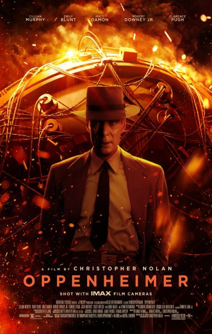

A challenging watch to be sure, but a worthwhile one
One of the most anticipated films of the year for many people, myself included, Oppenheimer largely delivers. Much of it's great. I feel like I loved two of its three hours, and liked the other hour.... but it's that fact that stops me from adoring the entire thing. I know with Christopher Nolan's Dunkirk, that clicked on a second watch, so maybe Oppenheimer will need one too. That being said, I don't feel the need to rush out and see it again too soon, because it was a long and exhausting film.